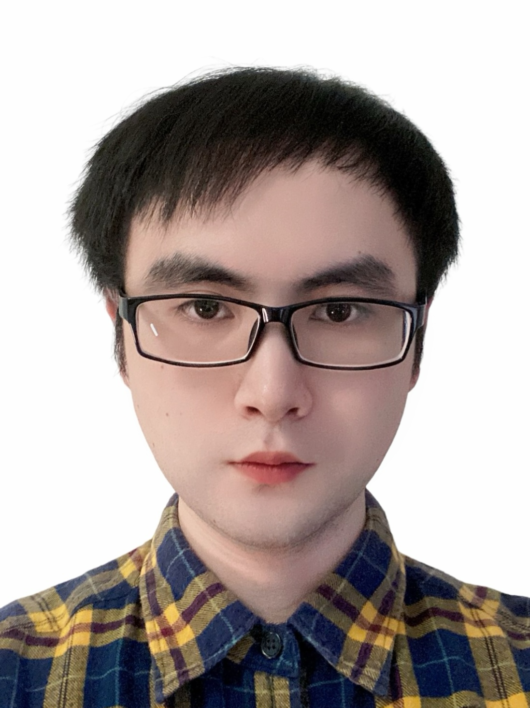

TongWang 王通
|  | Tong Wang |
News
- 2023.10, 1 papers has been accepted by Neurocomputing.
Awards and Honors
- 2022, Outstanding Graduates, Nanjing Tech University
- 2022, Outstanding Master’s Thesis, Nanjing Tech University
- 2021, National Scholarship, Ministry of Education
- 2020, Second Prize, "Huawei Cup" China Graduate Student Mathematical Modeling Contest
- 2018, Outstanding Graduate, Lanzhou University of Technology
- 2018, National Scholarship, Ministry of Education
- 2017, Second Prize, "Challenge Cup" National Extracurricular Academic Works Competition for College Students
- 2016, Second Prize, "Higher Education Society Cup" National College students Mathematical Contest in Modeling
Publications
 |
Neighborhood contrastive representation learning for attributed graph clustering. |
 |
Multi-scale graph attention subspace clustering network. |